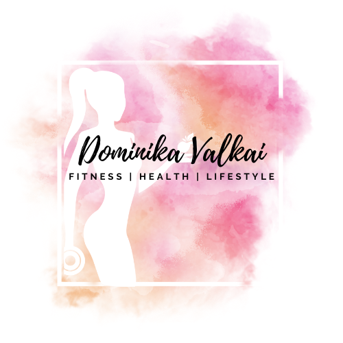

O MNE
Volám sa Dominika Valkai a pôsobím ako výživová poradkyňa, osobná trénerka a coach. O výživu
ako takú som sa začala zaujímať už na strednej škole. Keďže som sa súťažne venovala
tancovaniu, zaujímalo ma, či svoj výkon môžem zlepšiť výživou. Môj záujem pokračoval aj naďalej
a už v treťom ročníku som pomáhala zostavovať jedálničky. Po ukončení strednej školy som sa
prihlásila na Masarykovu univerzitu v Brne, kde som úspešne vyštudovala a získala titul Bc. v odbore Regenerácia a
výživa v športe na Fakulte športových štúdií.
Popri tom som tancovanie vymenila za silové cvičenie. Odmalička som milovala pohyb. Spravila
som si trénerský kurz a začala tak pracovať s prvými klientmi.
Za celý čas sa môj štýl formoval až do podoby, akú má dnes. Snažím sa neustále vzdelávať, či už
vo forme kurzov, školení alebo samoštúdiom. Verím že optimálna výživa a pohyb je kľúčom ku
šťastnému a zdravému životu.

MOJA FILOZOFIA
Neverím v zázračné diéty a rôzne stravovacie štýly založené na obmedzeniach. Ľudia sú rozdielny a preto sa snažím, aby si každý našiel vo výžive a pohybe to svoje.
Zdravý životný štýl by mal byť súčasťou bežného, každodenného života. Nemal by byť pre nás problém udržiavať ho dlhodobo.
Vo svojej práci sa venujem len ženám. Mám radosť, keď môžem ženám pomáhať, budovať ich
sebavedomie, zdravie či silu. Tým môžu viesť šťastnejší život, bez obmedzovania a neustáleho
tápania v diétách a cvičení.
Zdravý životný štýl neznamená byť neustále obmedzovaný. Je to o tom nájsť rovnováhu v živote,
strave či v pohybe tak, aby to vyhovovalo práve Vám. Každý má iné ciele, každý má iné
podmienky a nachádza sa v inej situácii. Preto to, čo funguje na jedného, nefunguje na druhého
človeka. Nie je to len o chudnutí. Patrí sem aj osvojiť si zvyky, naučiť sa flexibilite a vedieť sa
prispôsobiť danej situácii tak, aby sme z nej vedeli vyťažiť to najlepšie v danom momente.
Nebudem Vám prikazovať, čo máte robiť alebo jesť. Chcem Vám pomôcť tak, aby ste pochopili
súvislosti na základe Vašich emočných, psychických či fyzických potrieb. A tak sa naučili žiť
zdravý, spokojný a šťastný život.
Som tu pre Vás.
Ponúkam:
Trénerské služby - osobne aj online
Individuálny prístup ku každému klientovi
Vyberte si, čo Vám najviac vyhovuje a neváhajte ma kontaktovať. Teším sa na spoluprácu!
ONLINE COACHING
Chceš sa naučiť optimálne stravovať, doladiť svoju štruktúru stravy a niečo nové sa naučiť? Alebo sa zdokonaliť v tréningovom procese, dať svojmu tréningu systém a poriadok? Prípadne zlepšiť svoj životný štýl, vyformovať postavu, cítiť sa lepšie? Online coaching je výborná forma spolupráce, ktorá môže fungovať aj na diaľku.
Tréning + výživa
- Kombinácia tréningového plánu a nastavenia stravy
- Vstupná konzultácia zadarmo
- Týždenné kontroly (check-ins)
- Vypočítané makroživiny
- Návod, ako si sledovať makroživiny a kalórie
- Ukážkový jedálniček
- Individuálny tréningový plán do fitka či na doma
- Konzultácia a podpora počas celého procesu
- Minimálna doba spolupráce 2 mesiace
- Program zahŕňa 2 osobné tréningy za mesiac
Výživa
- Individuálne nastavenie podľa cieľa
- Týždenné kontroly (check-ins)
- Vysvetlenie kalórií a makroživín
- Pochopenie základov zostavovania jedálnička
- Návod, ako si sledovať makroživiny a kalórie
- Rady, informácie, tipy, ktoré využiješ aj po skončení spolupráce
- Cieľom je naučiť sa optimálne stravovať dlhodobo, nie na krátky čas
- Ukážkový jedálniček
- Konzultácia a podpora počas celého procesu
- Minimálna doba spolupráce 2 mesiace
Podmienky:
- Pri tréningovom coachingu je možné spolupracovať len s dievčatami, ktoré už majú skúsenosti s cvičením a ovládajú základy. Online tréningový coaching nie je vhodný pre začiatočníkov. Možné je však spolupracovať najskôr na báze osobných tréningov, po zaučení neskôr prejsť na online coaching.
- Nemôžem spolupracovať s niekým, kto trpí akoukoľvek formou poruchy príjmu potravy. S týmto problémom sa treba obrátiť na odborníkov a doktorov, nie na výživových poradcov/coachov.
OSOBNÉ TRÉNINGY
Osobné tréningy sú vhodné ako pre úplných začiatočníkov, ktorí sa chcú naučiť správne cvičiť, tak aj pre pokročilých cvičencov, ktorí zase chcú skontrolovať/doladiť svoju techniku. Prípadne pre ľudí, ktorí nechcú cvičiť sami, ale pod dozorom alebo sa jednoducho cítiť dobre a zlepšiť svoje zdravie.
- Tréning prispôsobený tvojim cieľom
- Individuálne dohodnutý rozpis tréningov
- Naučenie sa správnej techniky cvikov
- Vysvetlenie základov tréningového procesu
- Vstupný tréning zadarmo (pri spolupráci min. mesiac)
- Pre začiatočníkov aj pokročilých